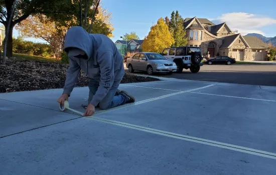
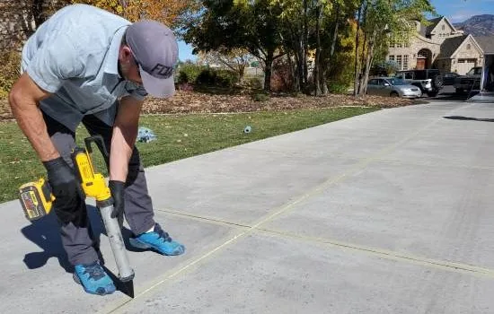
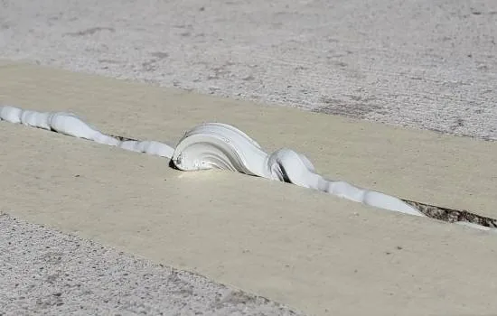
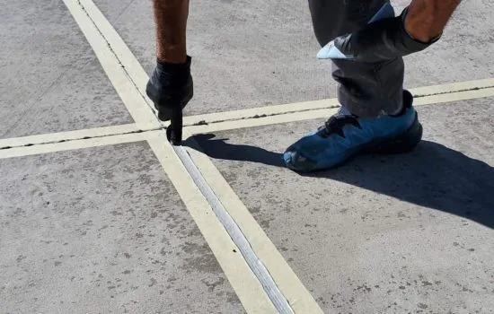
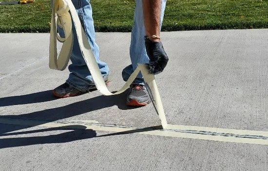
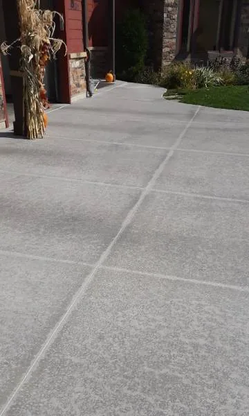

Poly-Lift provides concrete sealing in Logan, across Cache Valley and in Davis County, from our Logan office. Call the Cache location at (435) 999-9309 or the Weber location at (801) 530-5617.
Increase the Longevity of your concrete.
No matter what kind of surface you have, a driveway or patio area, concrete sealing is always beneficial.
Depending on how concrete is laid, it is susceptible to damage which can cause it to crack, spall and flake.
Improved Appearance
Most sealers keep your concrete looking new while smoothing and preserving color.
Protection from Harsh Elements
We're here to help you weather the harsh winters, such as frost heave due to moisture penetration, along with salt and ice during winter. Our concrete sealing also protects from oil chemical resistance so your outdoor space can survive through tough weather seasons.
Prepare
First, we prepare your driveway, to ensure it is clean. We will be placing grout inside your concrete seams in order to keep water from creeping underneath to ruin your concrete. Grout does not seal well in dirt, so we ensure your concrete seams are clear of debris.
Tape
Next, we tape the seams of your driveway to make sure that you get a nice clean finish on your grout line. Grout is a sticky business and if not done properly it can smear all over your driveway. It is similar to painting.
Apply
The next step is to administer the grout into the cracks. We use a squeeze gun to ensure a nice uniform finish.
Flatten
A plastic spoon is used to level the grout. We concave the seam because grout rises as it dries. This concave method allows the grout to expand and seal the crevice properly.
Remove
The tape is slowly removed and the grout is left to dry.
Spray
After the grout has dried, we spray the concrete sealant onto your driveway. We use deliberate, steady strokes to provide a smooth and uniform finish.
Wait
The final step is to wait for the sealant to dry. This will take a day, but it is worth it. Your driveway is now protected from water, moisture and looks great!
Your Concrete Leveling and Foundation Repair Experts in Utah
- Cache County, UT
- Rich County, UT
- Box Elder County, UT
- Weber County, UT
- Davis County, UT
- Morgan County, UT
- Salt Lake County, UT
- Washington County, UT
From our jobs






Common questions
01Is It Necessary to Seal Concrete?
We recommend sealing your concrete if you live in a climate that freezes.
02How Long After Sealing Concrete Driveway Can I Drive on It?
24 hours
03How Long Should Concrete Cure Before Sealing?
Concrete can be sealed immediately after pouring or anytime after
04When Should I Seal Cracks on My Concrete Floor?
Immediately,
05Can Concrete Sealers Make Surfaces Slippery?
Sometimes concrete sealers can make surfaces slippery.
06How Long Should You Wait Before Sealing Concrete?
Concrete sealer can be applied immediately after finishing.